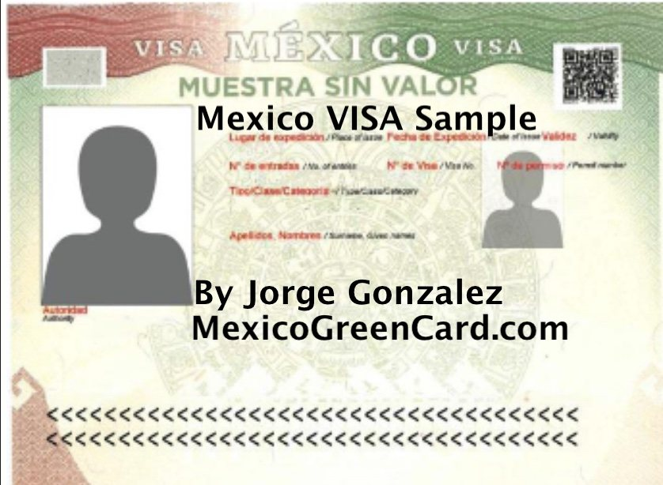
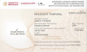
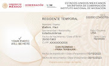
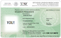
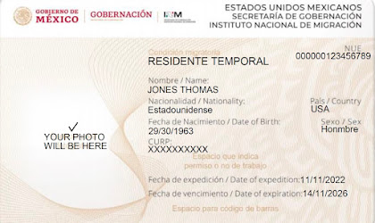
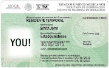

Document preparation and filings for Temporary or Permanent Mexico Resident Visa/Card in the Mexican Consulates in USA and Mexico Immigration INM.
Mexico Visa Document Preparation USD400.00
CANJE Document Preparation USD400.00
Visa and Canje Document Preparation USD750.00
Temporary Resident Card Renewal USD550.00
20 YEARS HELPING APPLICANTS WITH TR AND PR MEXICO RESIDENT VISA/CARD
TR MEXICO RESIDENT VISA SAMPLE
(TR) Temporary Mexico Resident Visa Process
Overview
If you are a US citizen considering Temporary Mexico Residency, here's a step-by-step guide to the TR Mexico Visa process.
Process Steps
- Mexican Consulate Application
- Begin the process at a Mexican Consulate in the US.
- Receive a TR Mexico Visa valid for six months.
2. Visa Exchange
- Within thirty days, exchange the TR Mexico Visa for TR Mexico Card.
- Validate and stamp the TR Mexico Visa at the Mexico border or airport.
Paperwork Assistance by Jorge Gonzalez
For expert guidance and paperwork preparation in the USA and Mexico, contact Jorge Gonzalez, a Mexico Visa Specialist click here
Qualifications for Temporary Mexico Residency
Learn about the eligibility criteria for Temporary Mexico Residency:
- Family Ties
- Qualify if you have ties to a Mexican spouse or children.
- Job Offer or Employment
- Criteria include a job offer with occupation details, address, and proof of future employer ID registration.
- Own real estate in Mexico.
- Prove a monthly NET income of $5,250.00 for the past six months.
- Show investments or bank accounts averaging $87,511.00 monthly for the past twelve months.
Application Categories
- Through a Mexican Spouse or Temporary Resident Cardholder
- Apply based on marriage to a Mexican national or Temporary Resident Card Holder.
- Duration: 1, 2, 3, or 4 years.
2. Retirement/Pension or Employment Income
- You can start a business in Mexico as a Temporary Mexico Resident Card Holder.
- Obtain a work permit with the card indicating PERMISO PARA TRABAJAR (permit to work).
Starting the Process
- Consulate or Embassy Initiation
- The process for Temporary Mexico Residency through income must begin in a Mexican Consulate or Embassy before entering Mexico.
- The process can begin in Mexico for those starting through a Mexican spouse or child.
FAQs
- Processing Time
- Obtaining a Temporary Mexico Resident Card takes 1 to 10 days at the Mexican Consulate in the USA.
- After visa approval, the process in the corresponding Mexico INM Immigration office takes one to two weeks.
- Fees
- Visa Fee: $56.00
- Temporary Resident Card Cost: Approximately US$619.00 for one year.

PERMANENT MEXICO RESIDENT VISA SAMPLE
PERMANENT MEXICO RESIDENT VISA/CARD PROCESS:
If you are a U.S. citizen interested in living in Mexico, permanently this is the correct visa for you. Read the following details:
Firstly, the P.R. Mexico Visa process starts in a Mexican Consulate in the U.S. Secondly, the Mexican Consulate issues a P.R. Mexico Visa for six months. Thirdly, and most importantly, you must exchange the P.R. Mexico Visa for a P.R. Mexico Card within thirty days after the P.R. Mexico Visa is validated and stamped at the Mexico border or airport.
Permanent Mexico residency status: Authorize you to reside in Mexico indefinitely. As a permanent Mexican resident, you can work or open a business in Mexico. You do not require a special permit.
Five ways How to apply for Permanent Mexico Resident Visa:
- If you are retired, you can apply for a permanent resident visa. You must prove a monthly net income of $7,321.00 from social security or another income for the past six months before you apply.
- If you do not meet the above income requirement, you can apply through your investments or savings, demonstrating $292,859.00 per month, the average balance for the past twelve months.
- If you completed four years as a Temporary Residency, you could change status to permanent residency.
- Permanent Mexico Residency through Mexican Spouse or Permanent Resident Card Holder, you can apply for Permanent Residency if you can prove you are married to a Mexican national or Permanent Resident Card Holder. Under this category, you are granted a temporary residency for two years. Then you can apply for permanent residence.
- If you have Mexican-born children, you can apply for permanent residency regarding their age. This process can be done directly at Mexico (INM), Mexico National Institute of Immigration, Mexican Consulate, or Embassy.
Permanent Mexico Residency through income process must start in a Mexican Consulate or Embassy before entering Mexico. Through Mexican spouse or child can begin in Mexico.
FAQs
How long is the process to obtain a Permanent Mexico Residency Card? 1 to 10 days in the Mexican Consulate. After the visa approval by the Mexican Consulate, the process to receive the Permanent Resident Card in the corresponding Mexico INM Immigration office closer to your Mexico address can take 1 to 30 days.
How much is the permanent resident visa fee? $56.00
How much is the permanent resident card $754.00.
Permanent Mexico Residency Card advantage is a lifetime document (status). Renewals are not required. Permanent Resident Card Cardholders are allowed to work, and they do not require a special permit.
Disadvantage: Permanent Mexico Resident Card Holders can not drive U.S. plated vehicles to Mexico unless imported.
In general, Permanent Mexico Resident Cardholders can do everything as the Mexican Citizens do except vote, own property 50 kilometers from the coast and 100 kilometers from the US-MEXICO borders.

temporary mexico resident card renewal
MexicoGreenCard.com
The normal renewal process can start 30 days prior expiration of the card. The renewal must be in the corresponding immigration office where the applicant resides in Mexico.
Jorge Gonzalez offers renewal paperwork preparation to all the INM offices throughout Mexico.
If you are traveling outside Mexico and your Temporary Resident Card expires. You have 55 days grace time to renew it from the expiration day. The renewal must be done within 5 days after your return to Mexico. If you are traveling by air or land it is a MUST to request exit and re-entry stamp from the INM Immigration agent in order to qualify for late renewal.
Renewal cost for 2026, in Mexico currency:
1 year USD $619.00
2 years USD $727.00
3 years USD$1,175.00
4 years USD $1,392.00
Can I renew my TEMPORARY RESIDENT CARD if is expired? Yes, but only if you were out of the country ( Mexico)
Can I renew my TEMPORARY RESIDENT CARD outside Mexico? No, it can only be renewed in the corresponding INM office where you reside or work.
How long is the process? It varies by office, ranging from 1 to 30 days.

temporary mexico RESIDENT card with permit to work
MexicoGreenCard.com
Applicants wishing to work in Mexico must file an employment petition with a Mexican corporation or an independent (personal) business before entering Mexico. If the applicant already has a Temporary Residency obtained through personal income, or marriage/they can apply for a change of status to working.
Temporary Mexico Green Card holders who obtained their resident status through income or marriage can open their own business in Mexico if they want to be self-employed. Temporary Mexico Residency Status allows applicants to register a business at SAT, then apply for a work permit. The temporary resident card will be the same, except it will have an indication stating PERMISO PARA TRABAJAR, which translates to (permit to work.
FAQs
How long is the temporary working resident card valid? 1 year after that can be renewed for 1, 2, or 3 years at once.
Can I work for different companies with the same temporary resident card? No
How much does temporary residency with a work permit cost? About $619.00, US first year, plus the working permit fee of about $244.00, US
How long does the process take to obtain a valid temporary resident card? About 2 months
I already hold temporary residency based on personal income or marriage. Can I work?. Yes, yes, but you need to apply for a work permit

temporary mexico resident card expired
If you are traveling outside Mexico and your Temporary Resident Card expires. You have 55 days grace time to renew it from the expiration day. The renewal must be done within 5 days after your return to Mexico. If you are traveling by air or land it is a MUST to request exit and re-entry stamp from the INM Immigration agent in order to qualify for late renewal. Contact Jorge for details at 619-512-7537 mexicogreencard.com

MexicoGreenCard.com
TEMPORARY OR PERMANENT MEXICO RESIDENT CARD REPLACEMENT:
Applicable to the temporary or permanent Mexico Green Card Holder, in case of theft, loss of their resident card.
REQUIREMENTS:
1. Original and copy of the passport used to obtain current status
2. Government fees
3. Application
4. New photos
5. Formato Basico
In the event of theft or loss of the Temporary or Permanent Mexico Resident Card occurred in national territory (Mexico), the foreigner must personally appear before the immigration authority and testify.
In case of theft or loss of the Temporary or Permanent Mexico Resident Card occurred outside Mexico, the foreigner must apply for the replacement in nearest Mexican Consulate or Embassy where the Temporary or Permanent Resident Card was lost or stolen.
Need assistance with the process contact Jorge Gonzalez for assistance at 619-512-7537 or MexicoGreenCard.com

MexicoGreenCard.com
TEMPORARY MEXICO RESIDENT CARD REINSTATEMENT
REINSTATEMENT FOR TEMPORARY MEXICO RESIDENT CARD EXPIRED FOR LESS THAN 60 DAYS
Applicable to the foreigner out of immigration status who has an expired Temporary Mexico Resident Card for less than 60 days from the expiration day.
REQUIREMENTS:
- Original passport
- Government fees
- Original expired Temporary Resident Card
- Fine fees
REINSTATEMENT SCENARIOS:
- Through retirement income
- Through employment
- Through marriage with Mexico National
- Through marriage with temporary or permanent resident card holder
NEED ASSISTANCE WITH THE PROCESS?
Contact Jorge Gonzalez at 619-512-7537 or Jorge@sandiegoleisure.com
MexicoGreenCard.com
CHANGE OF STATUS FROM TEMPORARY MEXICO RESIDENCY TO PERMANENT MEXICO RESIDENCY
Applicable to the Temporary Mexico Resident Card Holder, who wishes to reside in Mexico permanently.
REQUIREMENTS:
- Original and copy of the passport that was used to obtain the Temporary Mexico Residency Status
- Original and copy of the Temporary Mexico Resident Card
- Government fees
SCENARIOS FOR CHANGE OF STATUS FROM TEMPORARY MEXICO RESIDENCY STATUS TO PERMANENT
- Through marriage with Mexican National or Permanent Mexico Resident Card Holder. Under this category the spouse will be granted temporary residency for two years, when the two years are up, he/she can change status to permanent
- Through Mexican children regardless of their age
- Through Temporary Mexico Residency Status (four consecutive years) NEED ASSISTANCE WITH THE PROCESS? CONTACT: Jorge Gonzalez at 619-512-7537 or Jorge@sandiegoleisure.com